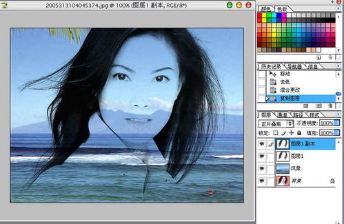

- 打开素材图
- 复制背景图层一份，并改名为图层1.如图：
- 我们先用矩形选框工具框住右边的图像，然后按Ctrl+L键，点选设置白场吸管工具，在选区内的背景上点击，务必使背景尽可能变为白色，而要抠取的主体人物部分尽可能的不损失细节为好。如图：
- 按Ctrl+Shift+I键，反选，然后也按Ctrl+L键，用上面的方法，把背景也设为白色。如图：
- 上面的两部，目的只有一个，使背景变为白色，有人会问不用框选出选区直接用Ctrl+L色阶进行背景变白的处理行不行？我觉得行不行，但是因为头发的左右两边的背景色有些不相同多少，只用一个点来定义白场，人物细节必将损失过多些。这也就是我为什么分两边来定义背景为白色的原因。说了这么多的废话，接下来，按Ctrl+D键，取消选区，然后用橡皮擦工具，把一些还没有变白色的背景杂色部分进行擦除。如图：
- 调入一张背景图，作为我们抠图的检验，把它放到图层1的下方，并改名为“风景”，如图：
- 按Ctrl+Shift+U键，去色，然后我们把图层1的图层混合模式改为正片叠底（正片叠底简单的理解就是白色变透明，其它不变），如图：
- 什么？头发不够黑吗？没事，按Ctrl+J键，复制一层即可了，这下头发够黑了吧。如图： 
- 复制背景层，并把背景副本层置于顶层，然后给背景副本层添加图层蒙板，然后按D键，恢复为默认的前景色和背景色，再按B键，切换到画笔工具，把不需要的部分涂抹，如图：
- 添加照片滤镜调整图层，设置如图：
- 最后结果：
-